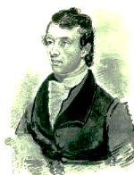
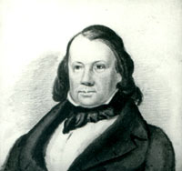

|
by Stefan Bielinski James Eights was Albany's first historical artist. He also was a scientist and naturalist, an antiquarian historian, and a writer. But because most of his achievements took place well into the nineteenth century, his principal contribution to the early Albany story took the form of a series of cityscape drawings and paintings that showed Albany as he remembered it in his childhood.  James Eights was born in 1798, the only son of respected city physician Dr. Jonathan Eights and his wife, New York City transplant Alida Wynkoop Eights. Growing up in the doctor's home/office on North Pearl Street, he was educated by his father and championed by his sometime neighbor, Stephen Van Rensselaer, who had young James appointed draftsman to the geological survey of the Erie Canal. Eights's maps and drawings brought him some note. By the 1820s, he was finding work as a surveyor and draftsman for naturalist and educator Amos Eaton and the younger geologist, Ebenezer Emmons. In 1823, he was one of the founders of the Albany Lyceum of Natural History and published a number of scientific papers in its Transactions. In 1826, Eaton organized a "Traveling School of Science on the Erie Canal" with Eights as second in command and mentor. In 1827, he was appointed examiner at Van Rensselaer's Troy-based engineering school. In 1828, twenty-four-year-old James Eights was named "surgeon and naturalist on an informal scientific expedition to the Antarctic." Sailing in October 1829, Eights later published several accounts of the geology and biology of the Southern Hemisphere. Perhaps because of professional jealousies or possibly due to alcohol and substance abuse, he was dropped from a second expedition organized in 1837. Eights's scientific career has been more closely chronicled in the sources cited below. By the late 1830s, James Eights was a confirmed bachelor and had returned to Albany and to the home of his parents. But on their deaths a decade later, he turned to scientific writing and to mineralogy . Calling himself a "geologist and mining surveyor" he undertook contract work in New England and in North Carolina. During the 1840s and 50s, he began to issue watercolors of Albany street scenes - set in the early 1800s and before. Based on memory, observation, and considerable research in maps and documents, his artwork is the basic resource for modern visualizations of early Albany. In addition, he wrote a number of historical essays published under assumed names. However, Eights did not flourish as he continued to age. Becoming destitute, he lived out his days in the Ballston Spa home of his sister. James Eights died in June 1882 at the age of eighty-four. With the old bachelor's passing, the Eights name disappeared from active life. But his legacy in art, science, and literature lives on in the annals of Albany!
James Eights has been the subject of at least three portraits. The first was a watercolor painted by scientist and Eights employer Ebenezer Emmons during the 1820s. The second watercolor also was by Emmons about 1838 and shows Eights at age 40. Like Eightses papers and his scientific implements, the portraits are in the collections of the Albany Institute of History and Art. A third painting, done during the 1870s, by Asa Twitchell is in the collection of the New York State Museum. first posted: 7/3/01; last revised 3/25/12 |